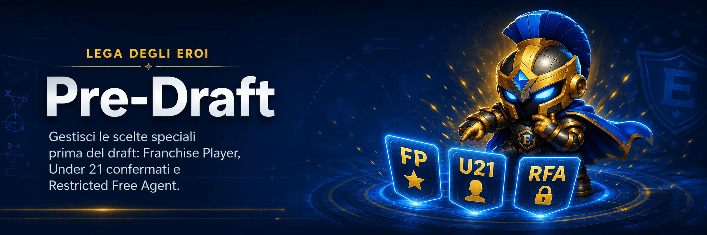

Franchise Player
Puoi scegliere massimo un Franchise Player. Costo base: Round 8, oppure Round 4 in caso di seconda conferma.

Puoi scegliere massimo un Franchise Player. Costo base: Round 8, oppure Round 4 in caso di seconda conferma.
Puoi riconfermare massimo un Under 21. Non conterà più tra i 4 Under 21 obbligatori della rosa. Costo: Round 15.
Puoi indicare massimo un RFA. Se viene chiamato al draft, il draft si fermerà per permetterti di pareggiare l’offerta.
I vincoli già salvati per la tua franchigia.
Impostazioni, scelte delle franchigie e verifica dei conflitti in un unico posto.
Operazione definitiva: assegna i costi in round e chiude il Pre-Draft. Controlla prima tutte le scelte.